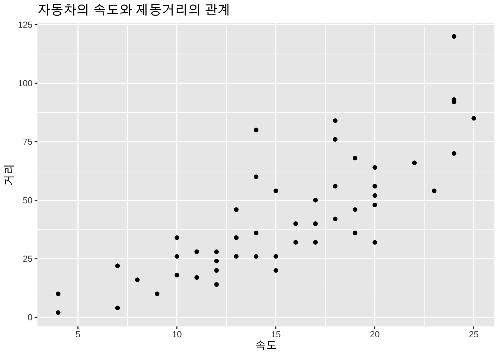
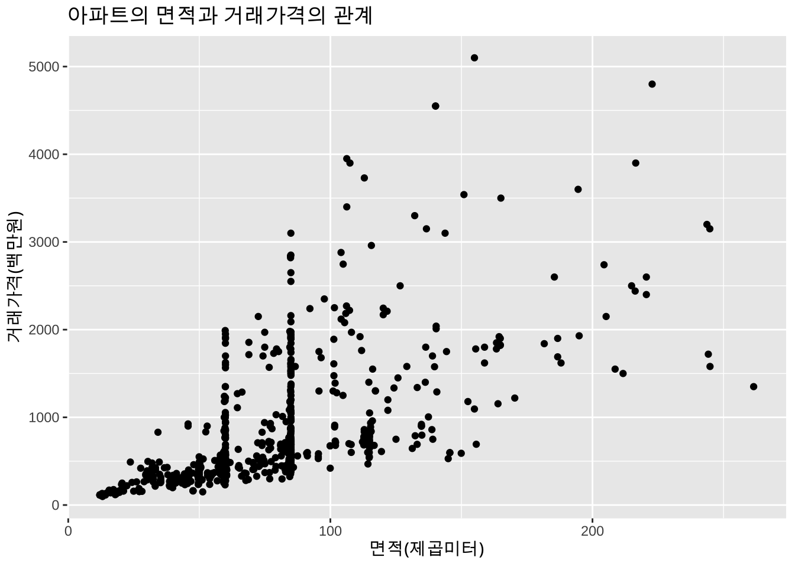
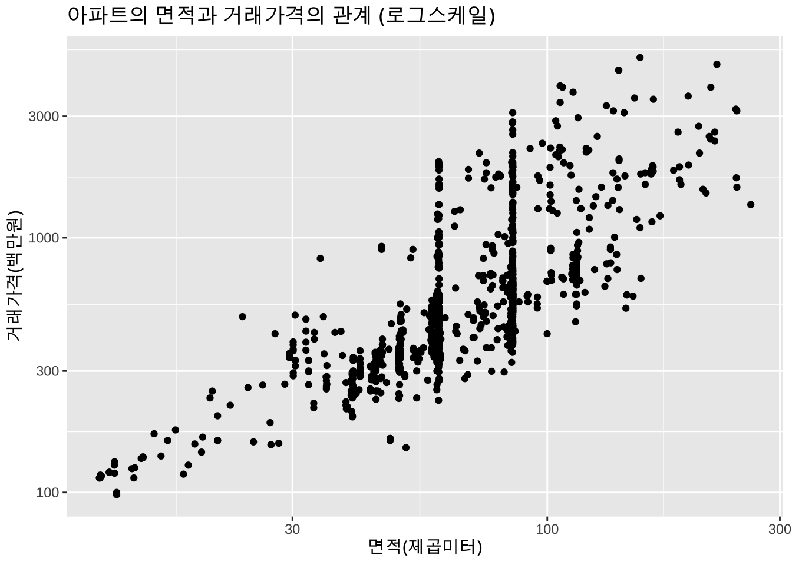
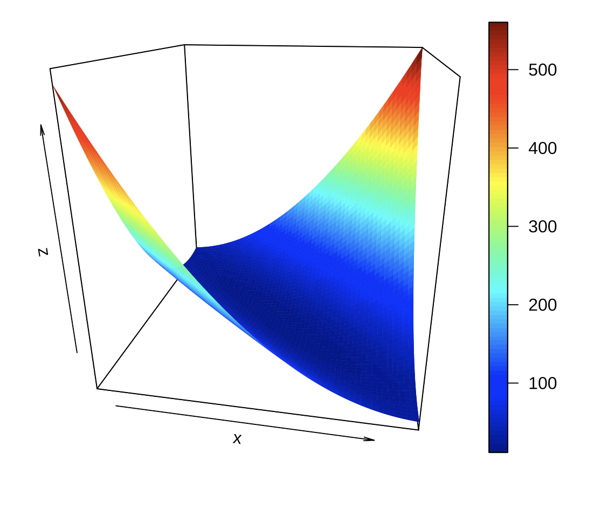
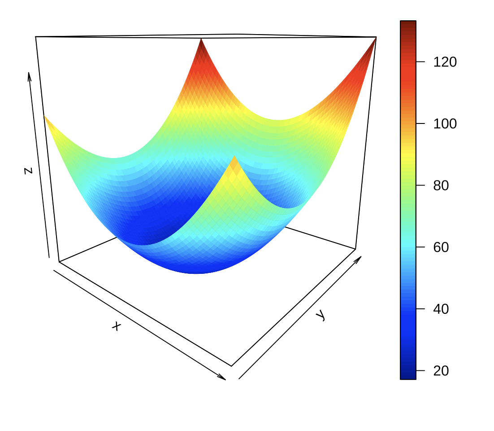
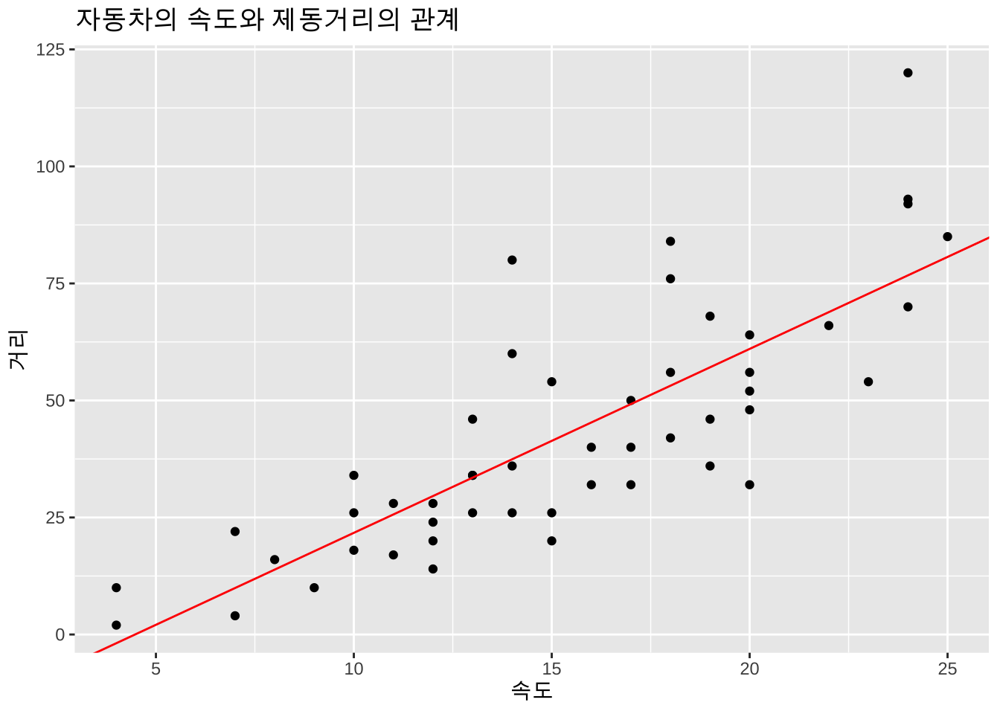
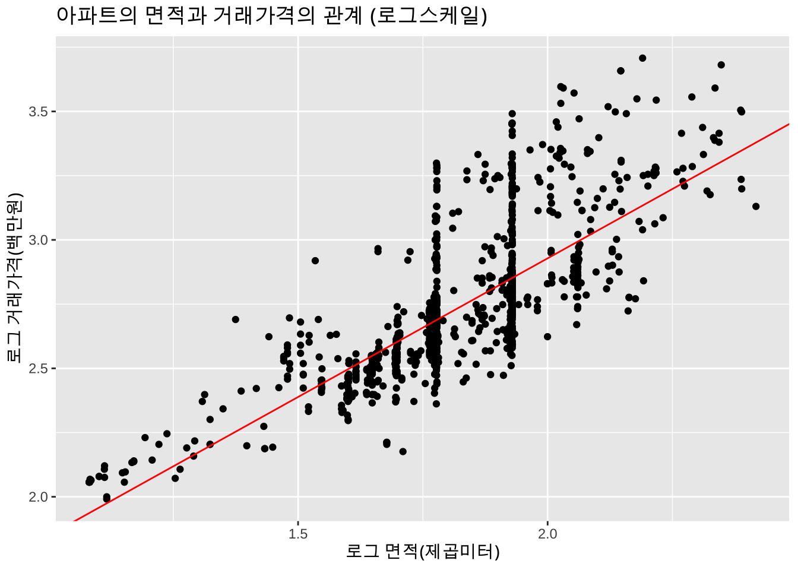
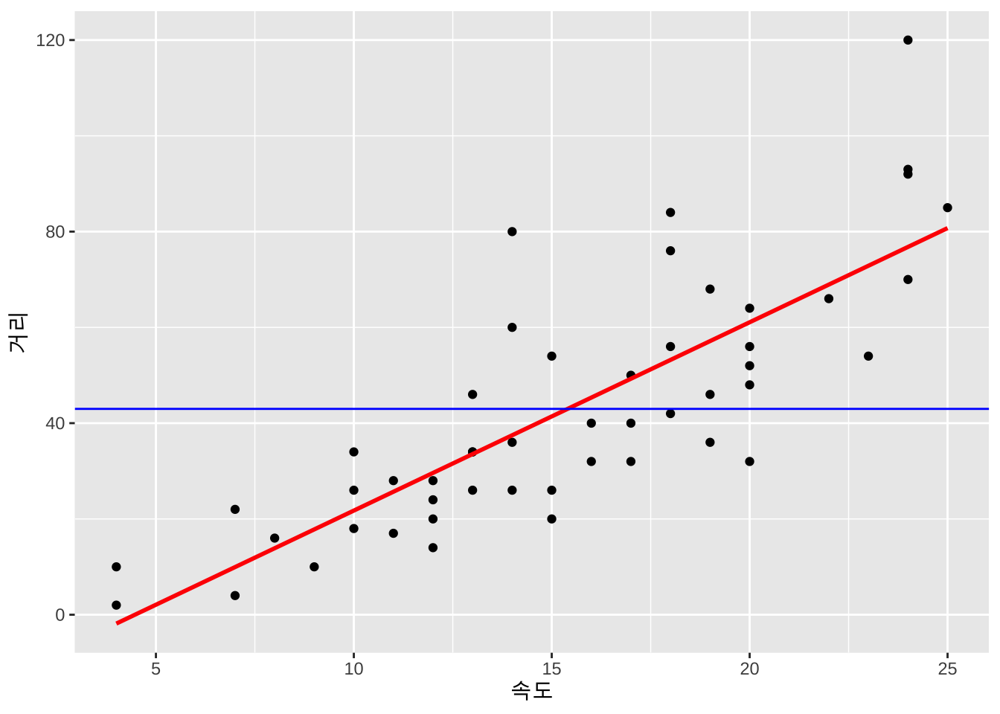

cars %>% head(n=10) speed dist
1 4 2
2 4 10
3 7 4
4 7 22
5 8 16
6 9 10
7 10 18
8 10 26
9 10 34
10 11 17보기 1.1 (자동차의 제동거리) 자동차가 달리는 속도(speed,단위는 mph; mile per hour)와 제동거리(dist, 단위는 ft;feet)의 관계를 알아보기 위하여 50대의 자동차로 실험한 결과의 자료 cars 는 다음과 같다(처음 10개의 자료만 보여준다). 자료는 R 의 data.frame 형식으로 저장되어 있다.
아래 자료를 보면 실험에서 2대의 자동차는 7 mph 로 달리다가 브레이크를 밟고 정지하는 경우 각각 4, 22 feet 의 제동거리가 필요한 것으로 나타났다. 또한 3대의 는 10 mph 로 달리다가 각각 18, 26, 34 feet 의 제동거리가 필요한 것으로 나타났다.
cars %>% head(n=10) speed dist
1 4 2
2 4 10
3 7 4
4 7 22
5 8 16
6 9 10
7 10 18
8 10 26
9 10 34
10 11 17자동차의 속도와 제동거리에 대한 산포도는 아래와 같다.
ggplot(cars, aes(x=speed, y=dist)) + geom_point() + labs(x = "속도", y = "거리") +
labs(title="자동차의 속도와 제동거리의 관계")
위와 같은 자료를 이용하여 자동차의 속도가 주어졌을 경우 제동거리를 예측하려고 한다면 어떤 방법을 사용해야 할까?
보기 1.2 (아파트 판매가격) 다음 살펴볼 자료는 2019년 거래된 서울 아파트의 실거래 데이터 중 4개의 구(동대문구, 서초구, 관악구, 노원구)에서 거래된 아파트 중 1000개의 아파트를 임의로 추출한 자료이다.
apart_2019 <- read.csv(here("data", "seoul_apartment_2019_sample.csv"), header = T)
head(apart_2019,10) gu year area price
1 관악구 1974 65.09 450
2 관악구 1978 56.86 276
3 관악구 1982 91.24 599
4 관악구 1982 91.24 560
5 관악구 1984 60.27 425
6 관악구 1984 60.27 420
7 관악구 1985 38.92 217
8 관악구 1988 61.74 485
9 관악구 1991 71.90 328
10 관악구 1991 84.44 438아파트의 면적(area;제곱미터)에 따른 거래가격(price;백만원)의 변화는 다음 그림과 같다.
ggplot(apart_2019, aes(x=area, y=price)) + geom_point() + labs(x = "면적(제곱미터)", y = "거래가격(백만원)") +
labs(title = "아파트의 면적과 거래가격의 관계")
만약 아파트의 면적(x)과 거래가격(y) 대신 각각의 로그값(log(x), `log(y))을 시용하면 다음과 같은 산포도가 나타난다.
# log scale for y
ggplot(apart_2019, aes(x=area, y=price)) + geom_point() + labs(x = "면적(제곱미터)", y = "거래가격(백만원)") +
scale_y_log10() +
scale_x_log10() +
labs(title = "아파트의 면적과 거래가격의 관계 (로그스케일)")
회귀모형(regression model)는 변수들의 함수적 관계를 분석하는 통계적 방법이다. 일반적으로 한 개 또는 여러 개의 설명변수들(explanatory variables, x)이 관심있는 반응변수(response variable, y)에 어떤 형태로 영향을 미치는지에 파악하고 설명변수와 반응변수의 함수 관계를 통계적으로 추론하는 것이 회귀분석의 목적이다.
위에서 살펴본 두 예제에서 자동차의 속도(x)가 증가하면 제동거리(y)가 증가하는 경향이 있다는 것을 알 수 있으며, 아파트의 면적(x)과 거래가격(y)도 유사한 관계임을 알 수 있다.
이러한 두 변수의 관계를 다음과 같은 반응변수 \(y\) 와 설명변수의 선형 에측식(linear predictor)으로 나타내어 보자. 이러한 관계는 반응변수의 값의 변화를 근사적으로 설명변수의 선형식으로 예측할 수 있다는 의미이다.
\[ y \approx \beta_0 + \beta_1 x \]
위와 같은 근사적인 관계를 더 구체화하여 다음과 같이 반응변수의 평균값이 설명변수의 선형식으로 나타나는 것을 가정할 수 있으며 이를 선형 회귀모형(linear regression model)이라고 한다.이
\[ E(y|x) = \beta_0 + \beta_1 x \tag{1.1}\]
식 1.1 은 반응변수 \(y\)의 평균이 설명변수 \(x\) 의 선형 예측식으로 나타나는 관계를 가정한 것이며 절편 \(\beta_0\) 와 기울기 \(\beta_1\) 는 회귀계수(regression coefficient)라고 부르는 모수(parameter)로서 추정해야 한다.
특별히 하나의 설명변수를 사용하는 회귀 모형을 단순선형 회귀모형(simple linear regression model)이라고 한다.
위에서 본 두 예제와 같이 \(n\) 개의 자료 \((x_1,y_1),(x_2,y_2),..,(x_n, y_n)\)을 독립적으로 추출하였다면 자료의 생성 과정을 다음과 같은 단순선형 회귀모형으로 나타낼 수 있다. 반응변수 \(y_i\)는 설명변수 \(x_i\)의 선형함수로 표현된 선형 예측식 식 1.1 과 임의의 오차항 (random error) \(e_i\) 의 합으로 나타내어진다고 가정하자.
\[ y_i = \beta_0 + \beta_1 x_i + e_i, \quad i=1,2,\dots,n \tag{1.2}\]
여기서 오차항 \(e_i\)는 평균이 \(0\)이고 분산이 \(\sigma^2\) 인 임의의 확률분포를 따르며 서로 독립이라고 가정한다.
\[ E(e_i)=0, \quad V(e_i) = \sigma^2 \quad i=1,2,\dots,n \]
오차항의 분산 \(\sigma^2\)도 추정해야할 모수(parameter)이다.
앞에서 언급한 것과 같이 선형회귀모형 식 1.2 에서 모수 \(\beta_0\)와 \(\beta_1\)를 회귀계수라고 하며 자료를 이용하여 추정해야 한다. \(n\)개의 자료를 이용하여 회귀계수 \(\beta_0\)와 \(\beta_1\)를 추정하려고 할 때 사용할 수 있는 방법들 중에서 가장 쉽고 유용한 방법은 최소제곱법(least square method)이다.
회귀모형 식 1.2 에서 \(\beta_0\)와 \(\beta_1\)의 값이 주어졌다면 설명변수 \(x_i\) 에서 반응변수의 관측값 \(y_i\)에 가장 합리적인 예측값은 무었일까? 가장 합리적인 예측값은 주어진 \(x_i\)에서 반응변수의 평균값인 \(E(y_i | x_i)=\beta_0 + \beta_1 x_i\)이다. 여기서 실제 관측하여 얻어진 값 \(y_i\)와 예측값 \(\beta_0 + \beta_1 x_i\) 사이에는 오차에 의해서 차이가 발생할 수 있다. 그 차이를 잔차(residual)라고 하며 \(r_i\) 라고 표기한다.
\[ r_i = y_i - E(y_i|x_i) = y_i - ( \beta_0 + \beta_1 x_i) \]
잔차는 위에 식에서 알 수 있듯이 관측값과 회귀식을 통한 예측값의 차이를 나타낸 것이다. 그러면 자료를 가장 잘 설명할 수 있는 회귀직선을 얻기 위해서는 잔차 \(r_i\)를 가장 작게하는 회귀모형을 세워야 한다. 잔차들을 최소로 하는 방법들 중 하나인 최소제곱법은 잔차들의 제곱합을 최소로 하는 회귀계수 \(\beta_0\)와 \(\beta_1\)를 추정하는 방법이다. 잔차들의 제곱합은 다음과 같이 표현된다.
\[ S(\beta_0 , \beta_1) = \sum^n_{i=1}r^2_i = \sum^n_{i=1}[y_i-(\beta_0 + \beta_1 x_i)]^2 \tag{1.3}\]
식 1.3 를 잔차제곱합(residusl sum of square)이라고 부른다. 일반적으로 회귀계수의 값이 특정지어져서 실제로 잔차를 계산할 수 있는 경우 잔차제곱합이라고 부른다. 뒤에 분산분석에서는 잔차제곱합을 SSE(sum of square error)라고 부른다.
잔차제곱합을 최소로 하는 회귀계수의 값을 찾는 최적화의 목표로 잔차제곱합이 제시될 때 이를 오차제곱합(error sum of square)이라고 부른다.
위의 오차제곱합 \(S(\beta_0 , \beta_1)\) 을 최소화하는 \(\beta_0\)와 \(\beta_1\)의 값을 구하는 방법은 오차제곱합이 \(\beta_0\)와 \(\beta_1\)의 미분 가능한 2차 함수이고 아래로 볼록한 함수(convex function)임을 이용한다.
gridnum <- 60
sizing <- 5
extrascale <- 10
extrascale2 <- 0.7
b0 <- seq(-17.6-sizing*extrascale, -17.6+sizing*extrascale, length=gridnum )
b1 <- seq(4-sizing*extrascale2, 4+sizing*extrascale2, length=gridnum )
SSE <- matrix(0, gridnum, gridnum )
for (i in 1:gridnum ) {
for (j in 1:gridnum ){
r <- cars$dist- b0[i] -b1[j]*cars$speed
SSE[i,j] <- (sum(r^2))/1000
}
}
persp3D(b0, b1, SSE, theta =10, phi = 20, expand = 1)
## Interactive 3d graph
#fig <- plot_ly(z = ~SSE)
#fig <- fig %>% add_surface()
#fig
위의 그림을 보면 볼록한 모양이 너무 평평하여 오차제곱합이 최소가 되는 \(\beta_0\)와 \(\beta_1\)의 위치가 명확하지 않다.
이제 모든 변수들을 표준화하고 표준화된 변수들에 단순회귀모형에 대한 오차제곱합을 \(\beta_0\)와 \(\beta_1\)의 함수로서 그림을 그리면 아래와 같다.
\[ v_i = \beta_0 + \beta_1 w_i + e_i, \quad i=1,2,\dots,n \tag{1.4}\]
여기서
\[ v_i = \frac{y_i -\bar y}{s_y}, \quad w_i = \frac{x_i -\bar x}{s_x} \]
# 변수들을 표준화!
std_cars <- as.data.frame(scale(cars))
gridnum <- 60
sizing <- 1
b0 <- seq(0-sizing, 0+sizing, length=gridnum )
b1 <- seq(1-sizing, 1+sizing, length=gridnum )
SSE <- matrix(0, gridnum, gridnum )
for (i in 1:gridnum ) {
for (j in 1:gridnum ){
r <- std_cars$dist- b0[i] -b1[j]*std_cars$speed
SSE[i,j] <- sum(r^2)
}
}
persp3D(b0, b1, SSE, theta =40, phi = 15, expand = 1)
## Interactive 3d graph
#fig <- plot_ly(z = ~SSE)
#fig <- fig %>% add_surface()
#fig
위위 같이 변수들을 표준화하면 오차제곱합 함수의 볼록한 정도가 덜 평평하게 변하여 최적값을 더 확실하게 보인다. 기계학습이나 인공지능 모형에서 적합하기 전에 모든 변수를 표준화하는 이유가 위의 그림에서 나타난다.
식 1.3 의 오차제곱합을 각 회귀계수에 대해서 편미분을 하고 0으로 놓으면 아래와 같이 두 방정식이 얻어진다.
\[ \begin{aligned} \pardiff{ S(\beta_0 , \beta_1)}{\beta_0} & = \sum^n_{i=1}(-2)[y_i-(\beta_0+\beta_1 x_i)]=0 \\ \notag \pardiff{ S(\beta_0 , \beta_1)}{\beta_1} & = \sum^n_{i=1}(-2 x_i)[y_i-(\beta_0+\beta_1 x_i)]=0 \end{aligned} \tag{1.5}\]
위의 연립방정식을 행렬식으로 표시하면 다음과 같이 나타낼 수 있다.
\[ \begin{bmatrix} n & \sum_i x_i \\ \sum_i x_i & \sum_i x^2_i \end{bmatrix} \begin{bmatrix} \beta_0 \\ \beta_1 \end{bmatrix} = \begin{bmatrix} \sum_i y_i \\ \sum_i x_i y_i \end{bmatrix} \]
위의 방정식을 풀어서 구한 회귀계수의 추정치를 \(\hat \beta_0\), \(\hat \beta_1\) 이라고 하면 다음과 같이 주어진다.
\[ \begin{aligned} \hat \beta_0 &= \bar y - \hat \beta_1 \bar x \\ \hat \beta_1 &= \frac{ \sum_i (x_i - \bar x)(y_i - \bar y)}{\sum_i (x_i - \bar x)^2} \end{aligned} \]
최소제곱법에서 얻어진 회귀계수의 추정량 \(\hat \beta_0\)과 \(\hat \beta_1\) 을 이용한 반응변수 \(y_i\) 에 대한 예측값 \(\hat y_i\)는 다음과 같이 정의되고
\[ \hat y_i = \hat E(y_i|x_i) = \hat \beta_0 + \hat \beta_1 x_i \]
잔차 \(r_i\)는 다음과 같이 계산한다.
\[ r_i = y_i - (\hat \beta_0 + \hat \beta_1 x_i) = y_i -\hat y_i \tag{1.6}\]
잔차 \(r_i\)는 다음과 같은 성질을 가진다.
\[ \sum_{i=1}^n r_i = 0 \]
\[ \sum_{i=1}^n x_i r_i = 0 \]
이제 위에서 본 cars 자료를 가지고 선형회귀모형 식 1.2 에 나타난 회귀계수를 추정해보자. 아래는 R 프로그램에서 함수 lm을 이용한 추정결과이다.
lm_car <- lm(dist~speed, data=cars)
summary(lm_car)
Call:
lm(formula = dist ~ speed, data = cars)
Residuals:
Min 1Q Median 3Q Max
-29.069 -9.525 -2.272 9.215 43.201
Coefficients:
Estimate Std. Error t value Pr(>|t|)
(Intercept) -17.5791 6.7584 -2.601 0.0123 *
speed 3.9324 0.4155 9.464 1.49e-12 ***
---
Signif. codes: 0 '***' 0.001 '**' 0.01 '*' 0.05 '.' 0.1 ' ' 1
Residual standard error: 15.38 on 48 degrees of freedom
Multiple R-squared: 0.6511, Adjusted R-squared: 0.6438
F-statistic: 89.57 on 1 and 48 DF, p-value: 1.49e-12위에서 주어진 선형회귀모형 식 1.2 에 대한 추정 결과를 이용하면 자동차의 속도(\(x\) = speed)와 제동거리(\(y\) = dist)의 관계는 다음과 같은 회귀식으로 나타낼 수 있다.
\[ \hat E(y | x) = −17.58 + 3.93 x \]
ggplot(cars, aes(x=speed, y=dist)) + geom_point() + labs(x = "속도", y = "거리") +
labs(title="자동차의 속도와 제동거리의 관계") +
geom_abline(intercept = -17.58, slope = 3.93, color = "red")
위의 추정식을 이용하면 주어진 자동차의 속도에서 제동거리를 예측할 수 있다. 예를 들어 자동차의 속도가 25 mph인 경우에는 제동거리의 평균이 80.73 mph 임을 알 수 있다.
\[ E(y|x=25) = −17.58 + 3.93 (25) = 80.73 \]
newcars <- data.frame(speed = c(25))
predict(lm_car, newdata=newcars) 1
80.73112 기울기의 추정값 \(\hat \beta_1 = 3.93\) 은 자동차의 속도 (\(x\))가 1 mph 증가할 때 평균 제동거리 (\(E(y|x)\))가 3.93 ft 증가한다는 의미이다.
이제 아파트 거애 가격에 대한 단순선형회귀모형을 적합해보자. 이 경우 면적과 가격대신 각각의 로그값을 사용하여 회귀모형을 적합해 보자. 아래는 아파트의 면적과 거래가격에 대한 단순선형 회귀모형을 적합한 결과이다.
apart_2019_log <- apart_2019 %>%
mutate(log_area = log10(area), log_price = log10(price)) %>%
dplyr::select(log_area, log_price)
head(apart_2019_log,10) log_area log_price
1 1.813514 2.653213
2 1.754807 2.440909
3 1.960185 2.777427
4 1.960185 2.748188
5 1.780101 2.628389
6 1.780101 2.623249
7 1.590173 2.336460
8 1.790567 2.685742
9 1.856729 2.515874
10 1.926548 2.641474lm_apart <- lm( log_price~ log_area, data=apart_2019_log)
summary(lm_apart)
Call:
lm(formula = log_price ~ log_area, data = apart_2019_log)
Residuals:
Min 1Q Median 3Q Max
-0.45348 -0.12132 -0.04075 0.07531 0.62358
Coefficients:
Estimate Std. Error t value Pr(>|t|)
(Intercept) 0.76902 0.05217 14.74 <2e-16 ***
log_area 1.08797 0.02843 38.27 <2e-16 ***
---
Signif. codes: 0 '***' 0.001 '**' 0.01 '*' 0.05 '.' 0.1 ' ' 1
Residual standard error: 0.1894 on 998 degrees of freedom
Multiple R-squared: 0.5948, Adjusted R-squared: 0.5944
F-statistic: 1465 on 1 and 998 DF, p-value: < 2.2e-16위의 결과는 다음과 같이 나타낼 수 있다.
\[ \hat E( \log10 y | x) = 0.769 + 1.0797 \log10 (x) \]
ggplot(apart_2019_log, aes(x=log_area, y=log_price)) + geom_point() + labs(x = "로그 면적(제곱미터)", y = "로그 거래가격(백만원)") +
labs(title = "아파트의 면적과 거래가격의 관계 (로그스케일)") +
geom_abline(intercept = 0.769, slope = 1.0797, color = "red")
이제 위의 결과를 응용하면 아파트의 면적이 100 제곱미터인 경우의 아파트의 평균 거래가격을 880(백만원)으로 예측할 수 있다.
newapart <- data.frame(log_area = c(log10(100)))
pred_y <- 10^predict(lm_apart, newdata=newapart)
pred_y 1
880.9605 고려한 설명변수와 반응변수에 대하여 제시된 회귀식을 적합한 후 회귀모형이 두 변수의 관계를 얼마나 잘 설명하는지에 대한 기준이 필요하다. 회귀식의 적합에 대한 기준으로서 결정계수(coefficient of determination; \(R^2\))가 있다. 결정계수는 적합의 정도(degree of fitting)를 측정한다. 즉 “설명변수는 반응변수를 얼마나 잘 예측하느냐”에 대한 정도를 수치로 표현한 것이다.
회귀분석에서 설명변수와 반응변수 간에 전혀 관계가 없다면 당연히 반응변수의 값은 설명변수 값의 변동 여하에 전혀 영향을 받지 않아야 한다. 단순회귀모형에서 설명변수 \(x\)의 값의 변화를 반응변수 \(y\)로 값으로 표현하는것이 바로 기울기 \(\beta_1\)이다. 이렇게 고려한 설명변수 \(x\)가 반응변수 \(y\)를 예측하는데 전혀 소용이 없다면 이는 기울기에 대한 회귀계수가 0 \(\beta_1=0\) 이라는 것을 의미이다. 이러한 경우에 대하여 다음과 같은 모형을 생각할 수 있다.
\[ y_i = \beta_0 +e_i, \quad e_i \sim (0,\sigma^2) \tag{1.7}\]
기울기에 대한 회귀계수가 0인 경우에 대한 모형을 식 1.7 과 같이 표현할 수 있으며 평균 모형(mean model)이라고 부른다. 평균 모형은 우리가 생각할 수 있는 모형 중에서 가장 간단한, 하지만 별로 쓸모없는 모형이라고 할 수 있다.
이러한 평균 모형에 대한 최소제곱법을 적용하여 \(\beta_0\)의 추정량을 구하면 추정량 \(\hat \beta_0\)는 \(\bar y\)가 된다. 그 이유는 위의 모형에 오차제곱합을 구해보면 다음과 같은 형식이 된다
\[ S(\beta_0)= \sum^n_{i=1}[y_i-\beta_0]^2 \]
여기서 \(\beta_0\)에 대하여 최고로 하는 지점을 찾아보면 다음과 같은 방정식을 얻을 수 있다.
\[ \frac{\partial S(\beta_0)}{\partial \beta_0} = 0 \Rightarrow \sum^n_{i=1}[y_i - \beta_0] = 0 \]
이 방정식을 풀면 \(\hat \beta_0 = \bar y\)가 됨을 알 수 있다. 결국 설명변수가 반응변수에 아무른 영향을 주지 못하게 되면 \(y\)의 예측값은 평균 \(\bar y\) 임을 알 수 있다. 참고로 평균모형 식 1.7 경우 \(\bar y\)는 \(\beta_0\) 의 최소제곱추정량이다.
여기서 주목해야할 점은 평균 모형 식 1.7 에서의 잔차 \(r_{0i}\)는 다음과 같이 정의된다.
\[ r_{0i} = y_i -\hat \beta_0 = y_i - \bar y \]
주어진 회귀식이 유의한 경우, 즉 회귀식의 기울기가 0이 아닌 경우 (\(\beta_1 \ne 0\)) 적합된 회귀식에 대한 잔차는 식 1.6 과 같이 나타난다. 만약 회귀식이 유의하다면 식 1.6 으로 구해진 잔차 \(r_i = y_i -\hat \beta_0 - \hat \beta_1 x_i\) 와 평균 모형에서 구해지는 잔차 \(r_{0i} = y_i - \bar y\) 간의 어떤 차이가 있을까?
아래의 그림은 앞의 예제 cars 자료에 대하여 설명변수가 없는 평균 모형(파란 선)과 설명변수가 있는 회귀모형(빨간 선)을 나타낸 그림이다. 잔차는 적합된 직선과 반응 변수 간의 차이를 의미하며 차이의 절대값이 작을 수록 좋은 모형이다.
ggplot(cars, aes(x=speed, y=dist)) +
geom_point() +
labs(x = "속도", y = "거리") +
geom_smooth(method = lm, color='red', se = FALSE) +
geom_hline(yintercept = mean(cars$dist), color='blue')
잔차의 절대값보다 제곱한 양이 다루기가 쉬우므로(why?) 평균 모형과 회귀 모형의 적합도를 비교하는 양으로서 다음과 같은 각각의 모형에서 나온 두개의 잔차제곱합을 생각할 수 있다.
먼저 평균 모형은 예측에 사용할 변수가 없는 경우로서 이때의 잔차는 각 관측값에 대한 예측값이 관측값의 평균이다 . 이러한 경우 잔차는 관측값 자체가 가지고 있는 변동으로 생각할 수 있다. 이러한 평균모형에서의 잔차 또는 관측값이 가지고 있는 변동을 총제곱합(Total Sum of Squares ; \(SST\))이다
\[ \begin{aligned} \sum_{i=1}^n r^2_{0i} & = \sum_{i=1}^n (y_i -\bar y)^2 \\ & = \text{ Residual Sum of Squares from mean model } \\ & = \text{ Variation of response variables} \\ & = \text{ Total Sum of Squares } \\ & = SST \end{aligned} \]
이제 설명변수가 있는 회귀모형에서 예측치 \(\hat y_i=\hat \beta_0 + \hat \beta_1 x_i\)를 고려하면 이 경우의 잔차들의 제곱합은 회귀식의 잔차제곱합(Residual Sum of Squares; \(SSE\))이라고 부르며 아래와 같이 정의한다.
\[ \begin{aligned} \sum_{i=1}^n r_i^2 & = \sum_{i=1}^n (y_i -\hat \beta_0 - \hat \beta_1 x_i) \\ & = \text{Residual Sum of Squares from linear regression model } \\ & = \text{ Residual Sum of Squares } \\ & = SSE \end{aligned} \]
만약 회귀식에서 고려한 설명변수가 반응변수를 예측하는데 매우 적합하다면 회귀모형에서 구한 잔차들의 제곱합이 평균모형에서 구한 잔차들의 제곱합보다 작을 것이다. 이러한 차이를 비교하려면 두 제곱합 \(SST\) 와 \(SSE\)의 관계를 이해하는 것이 중요하다.
두 제곱합 \(SST\) 와 \(SSE\)의 관계를 보기 위하여 먼저 두 잔차 \(r^0_i\) 와 \(r_i\)의 차이를 비교해 보자
\[ r^0_i - r_i = (y_i - \bar y) - (y_i - \hat y_i) = \hat y_i - \bar y \]
위의 식에서 두 잔차의 차이 \(\hat y_i - \bar y\)는 예측값과 평균 간 차이로서 그 절댸값이 크면 회귀직선이 반응변수를 설명할 수 있는 능력이 크다는 것을 의미한다.
위의 식을 다시 쓰면 다음과 같다.
\[ (y_i - \bar y) = (y_i - \hat y_i) + (\hat y_i - \bar y) \]
즉, (평균모형의 잔차)=(회귀모형의 잔차))+(회귀모형의 설명부분)으로 분해되는 것으로 이해할 수 있다. 이 분해에서 회귀모형의 잔차가 작을수록 회귀 모형의 예측 능력, 즉 적합도가 커지는 것을 알 수 있다.
이제 총제곱합은 다음과 같이 분해할 수 있다.
\[ \begin{aligned} \sum^n_{i=1}(y_i - \bar y)^2 &= \sum^n_{i=1}[(y_i-\hat y_i)+(\hat y_i - \bar y)]^2 \\ &= \sum^n_{i=1}(y_i-\hat y_i)^2+\sum^n_{i=1}(\hat y_i - \bar y)^2 + 2\sum^n_{i=1}(y_i-\hat y_i)(\hat y_i-\bar y) \\ &= \sum^n_{i=1}(y_i-\hat y_i)^2+\sum^n_{i=1}(\hat y_i - \bar y)^2 + 0 \quad \text{(why?)} \end{aligned} \]
따라서 다음과 같은 제곱합의 분해를 얻게 된다.
\[ \sum^n_{i=1}(y_i - \bar y)^2 = \sum^n_{i=1}(y_i-\hat y_i)^2+\sum^n_{i=1}(\hat y_i - \bar y)^2 \] 여기서 모형제곱합(regression sum of square; SSR)를 다음과 같이 정의하면
\[ SSR = \sum^n_{i=1}(\hat y_i-\bar y_i)^2 \]
총제곱합은 잔차제곱합 과 모형제곱합으로 분해된다.
\[ SST = SSE + SSR \tag{1.8}\]
관측값들이 보여주는 총 변동인 총제곱합(SST)에서 회귀모형으로 설명할 수 있는 변동, 즉 모형제곱합(SSR)이 차지하는 비율을 결정계수(coefficient of determination)라 하며 \(R^2\)으로 표현한다.
\[ R^2 = \frac{SSR}{SST} = 1 -\frac{SSE}{SST} =1- \frac{\sum^n_{i=1}(y_i-\hat y_i)^2}{ \sum^n_{i=1}(y_i - \bar y)^2} \]
위에서 정의된 \(R^2\) 는 평균 모형의 잔차제곱합 \(SST\)과 회귀모형의 잔차제곱합 \(SSE\)의 비율로 정의되는 것으로 해석할 수 있다. 즉,
\[ R^2 = 1 -\frac{SSE}{SST} =1 -\frac{\text{Residual SS from regression model}}{\text{Residual SS from mean model}} \]
결정계수의 정의를 보면 회귀모형의 잔차제곱합(\(SSE\))가 평균 모형의 잔차제곱합(\(SST\))에 대하여 상대적으로 작아질수록 결정계수가 커진다. 결정계수 \(R^2\)는 언제나 0 이상 1 이하의 값을 갖는다. 회귀모형이 데이터에 아주 잘 적합되면 결정계수의 값은 1 에 가깝게 된다.
일반적으로 회귀모형에서 반응변수의 수는 하나인 경우가 많지만 설명변수의 수는 여러 개인 경우가 많다. 이런 경우 중회귀 모형(multiple linear regression)은 다음과 같이 표현할 수 있고, \(p-\)개의 설명변수가 있다고 가정하고 \((x_1, x_2, \cdots, x_{p-})\) 표본의 크기 \(n\)인 자료가 얻어지면 선형회귀식을 행렬로 다음과 같이 표현할 수 있다.
\[ y_i = \beta_0 + \beta_1 x_{i1} + \beta_2 x_{i2} + \cdots + \beta_{p} x_{i,p} + e_i = \pmb x^t_i \pmb \beta + e_i \tag{1.9}\]
위의 식을 다시 표현하면 다음과 같이 쓸 수 있다.
\[ y_i = \pmb x^t_i \pmb \beta + e_i = \begin{bmatrix} 1 & x_{i1} & x_{i2} & \cdots & x_{i,p} \end{bmatrix} \begin{bmatrix} \beta_{0} \\ \beta_{1} \\ \beta_{2} \\ \vdots \\ \beta_{p} \end{bmatrix} + e_i \]
이제 \(n\)개의 관측치 \(y_1,y_2, \dots, y_n\) 으로 이루어진 관측값 벡터 \(\pmb y\)를 고려하면 n개의 관측치에 대한 회귀식을 행렬식으로 다음과 같이 표현할 수 있다.
\[ \begin{bmatrix} y_{1} \\ y_{2} \\ \vdots \\ y_{n} \end{bmatrix} = \begin{bmatrix} 1 & x_{11} & \cdots & x_{1,p} \\ 1 & x_{21} & \cdots & x_{2,p} \\ \vdots & \vdots & \vdots & \vdots \\ 1 & x_{n1} & \cdots & x_{n,p} \end{bmatrix} \begin{bmatrix} \beta_{0} \\ \beta_{1} \\ \vdots \\ \beta_{p} \end{bmatrix} + \begin{bmatrix} e_{1} \\ e_{2} \\ \vdots \\ e_{n} \end{bmatrix} \]
위의 식을 간단히 행렬식으로 표시하면 다음과 같다.
\[ \pmb y = \pmb X \pmb \beta + \pmb e \tag{1.10}\]
위의 행렬식에서 각 벡터와 행렬의 차원은 다음과 같다.
여기서 회귀분석의 오차항 \(e_i\)은 서로 설명이고 동일한 분산을 갖는다. 즉, 오차항은 다음의 분포를 따른다.
\[ \pmb e \sim (\pmb 0,\sigma^2 \pmb I_n) \]
따라서 관측값 벡터 \(\pmb y\)의 평균은 다음과 같고
\[ E(\pmb y|\pmb X) = E(\pmb X \pmb \beta+\pmb e)= \pmb X \pmb \beta + E(\pmb e) = \pmb X \pmb \beta \tag{1.11}\]
\(\pmb y\)의 분산은 아래와 같이 주어진다.
\[ V( \pmb y| \pmb X) = E[( \pmb y - \pmb X \pmb \beta)( \pmb y - \pmb X \pmb \beta)^t] = E( \pmb e \pmb e^t) = \sigma^2 \pmb I_n \tag{1.12}\]
여기서 오차항이 정규분포를 따른다면
\[ \pmb e \sim N(\pmb 0,\sigma^2 \pmb I_n) \]
관측값 벡터 \(\pmb y\) 또한 정규분포를 따른다
\[ \pmb y \sim N( \pmb X \pmb \beta, \sigma^2 \pmb I_n) \]
이제 중회귀모형 식 1.10 에서 회귀계수벡터 \(\pmb \beta\)의 추정량을 구하기 위하여 최소제곱법을 적용해보자.
\[ \min_{\pmb \beta} \sum_{i=1}^n (y_i - \pmb x_i^t \pmb \beta )^2 = \min_{\pmb \beta } ( \pmb y - \pmb X \pmb \beta )^t( \pmb y - \pmb X \pmb \beta ) \tag{1.13}\]
\(\hat {\pmb \beta}\)는 잔차의 제곱합 식 1.13 을 최소로 하는 최소제곱 추정량이다. 잔차의 제곱합을 \(S( \pmb \beta)\)이라고 하면
\[ \begin{aligned} S( \pmb \beta ) & = ( \pmb y - \pmb X \pmb \beta)^t( \pmb y - \pmb X \pmb \beta ) \notag \\ & = \pmb y^t \pmb y - \pmb y^t \pmb X \pmb \beta - \pmb \beta^t \pmb X^t \pmb y + \pmb \beta^t \pmb X^t \pmb X \pmb \beta \notag \\ & = \pmb y^t \pmb y -2 \pmb \beta^t \pmb X^t \pmb y + \pmb \beta^t \pmb X^t \pmb X \pmb \beta \end{aligned} \tag{1.14}\]
여기서 \(S( \pmb \beta)\)를 최소로 하는 회귀계수벡터의 값을 구하기 위하여 \(S( \pmb \beta)\)를 회귀계수벡터 \(\pmb \beta\)로 미분한후 \(\pmb 0\) 으로 놓고 선형 방정식을 풀어야 한다.
벡터미분을 이용하면
\[ \begin{aligned} \pardifftwo{ S( {\pmb \beta})}{\pmb \beta} & = \pardifftwo{}{\pmb \beta} (\pmb y^t \pmb y -2 \pmb \beta^t \pmb X^t \pmb y + \pmb \beta^t \pmb X^t \pmb X \pmb \beta) \\ & = \pmb 0 -2 \pmb X^t \pmb y + 2 \pmb X^t \pmb X \pmb \beta \\ & =\pmb 0 \end{aligned} \]
최소제곱 추정량을 구하기 위한 정규방정식은 다음과 같이 쓸 수 있다.
\[ \pmb X^t \pmb X \pmb \beta = \pmb X^t \pmb y \tag{1.15}\]
방정식 식 1.15 를 정규방정식(normal equation)이라고 한다. 만약 \(\pmb X^t \pmb X\)가 정칙행렬일 경우 최소제곱법에 의한 회귀계수 추정량 \(\hat {\pmb \beta}\) 다음과 같다.
\[ \hat {\pmb \beta} = ( \pmb X^t \pmb X)^{-1} \pmb X^t \pmb y \tag{1.16}\]
예측값 벡터 \(\hat {\pmb y}\) 는 \(E(\pmb y | \pmb X)\)의 추정치로서 다음과 같다.
\[ \hat E(\pmb y | \pmb X)= \hat {\pmb y} = \pmb X \hat {\pmb \beta} = \pmb X(\pmb X^t \pmb X)^{-1} \pmb X^t y \]
만약 \(\pmb X^t \pmb X\)가 정칙행렬이 아닐 경우 최소제곱법에 의한 회귀계수 추정량 \(\hat {\pmb \beta}\)은 \(\pmb X^t \pmb X\)의 일반화 역행렬 \((\pmb X^t \pmb X)^-\)를 이용하여 다음과 같이 구한다. 이 경우 일반화 역행렬이 유일하지 않기 때문에 회귀계수 추정량도 유일하지 않다.
\[ \hat {\pmb \beta} = ( \pmb X^t \pmb X)^{-} \pmb X^t \pmb y \]
식 1.13 에서 나오는 오차벡터를 정의하고 \(\pmb e = (\pmb y - \pmb X \pmb \beta)\) 오차벡터를 모수벡터 \(\pmb \beta\)로 미분하면 다음과 같은 결과를 얻는다.
\[ \pardifftwo{\pmb e}{\pmb \beta} = \pardifftwo{ (\pmb y - \pmb X \pmb \beta)}{ \pmb \beta} = - \pardifftwo{ \pmb X \pmb \beta}{ \pmb \beta} \equiv - \pardifftwo{\pmb \beta^t \pmb X^t }{\pmb \beta} = -\pmb X^t \]
이제 오차제곱합 \(S( {\pmb \beta})=\pmb e^t \pmb e\) 를 모수벡터로 미분하면 이차형식의 미분공식과 합성함수 미분공식을 차례로 적용하면 된다.
\[ \pardifftwo{ S( {\pmb \beta})}{\pmb \beta}=\pardifftwo{\pmb e^t \pmb e}{\pmb \beta} = \pardifftwo{\pmb e }{\pmb \beta} \pardifftwo{\pmb e^t \pmb e}{\pmb e} = -\pmb X^t \left( 2 \pmb e \right ) = -2 \pmb X^t (\pmb y - \pmb X \pmb \beta) \]
위의 방정식을 \(\pmb 0\)으로 놓으면 최소제곱 추정량 (열)벡터를 구한다.
\[ \pmb X^t \pmb y - \pmb X^t \pmb X \pmb \beta = \pmb 0 \quad \rightarrow \quad \hat{\pmb \beta} = (\pmb X^t \pmb X)^{-1} \pmb X^t \pmb y \]
보기 1.3 (중고차 가격자료) 강의 부교재의 usedcars 자료를 이용하여 중회귀모형을 적합해보자. 자료를 구성하는 변수는 다음과 같다.
price : 자동차 가격yesr :연식mileage : 주행거리cc : 엔진 크기automatic : 자동 변속기 여부usedcars %>% head(n=10) price year mileage cc automatic
1 790 78 133462 1998 1
2 1380 39 33000 2000 1
3 270 109 120000 1800 0
4 1190 20 69727 1999 1
5 590 70 112000 2000 0
6 1120 58 39106 1998 1
7 815 53 95935 1800 1
8 450 68 120000 1800 0
9 1290 15 20215 1798 1
10 420 96 140000 1800 0자동차의 가격을 반응변수로 한고 나머지 변수를 설명변수로 설정한 중회귀 모형에 대한 모수의 추정 결과는 다음과 같다.
usedcars_lm <- lm(price ~ year + mileage + cc + automatic, data=usedcars)
summary(usedcars_lm)
Call:
lm(formula = price ~ year + mileage + cc + automatic, data = usedcars)
Residuals:
Min 1Q Median 3Q Max
-177.35 -63.91 -0.99 70.34 212.69
Coefficients:
Estimate Std. Error t value Pr(>|t|)
(Intercept) 5.253e+02 3.998e+02 1.314 0.200823
year -5.800e+00 9.283e-01 -6.247 1.55e-06 ***
mileage -2.263e-03 7.211e-04 -3.138 0.004324 **
cc 3.888e-01 2.022e-01 1.923 0.065958 .
automatic 1.653e+02 3.986e+01 4.147 0.000339 ***
---
Signif. codes: 0 '***' 0.001 '**' 0.01 '*' 0.05 '.' 0.1 ' ' 1
Residual standard error: 101.1 on 25 degrees of freedom
Multiple R-squared: 0.9045, Adjusted R-squared: 0.8892
F-statistic: 59.21 on 4 and 25 DF, p-value: 2.184e-12회귀식을 추정하기 위한 회귀계수 추정값인 \(\hat {\pmb \beta}\)의 분포를 알아보기 위해서 우선 선형추정량을 보면 다음과 같다.
\[ \hat {\pmb \beta} = (\pmb X^t\pmb X)^{-1}\pmb X' \pmb y \equiv \pmb M \pmb y \] 따라서 최소제곱 추정량은 관측값들의 선형 변환이다. 회귀계수 추정값 \(\hat {\pmb \beta}\)의 기대값은
\[ \begin{aligned} E( \hat {\pmb \beta} ) &= E( \pmb M \pmb y) = E(( \pmb X^t \pmb X)^{-1} \pmb X' \pmb y) \\ &= ( \pmb X^t \pmb X)^{-1} \pmb X'E( \pmb y) \\ &= ( \pmb X^t \pmb X)^{-1} \pmb X^t \pmb X \pmb \beta \\ &= \pmb \beta \end{aligned} \]
따라서 최소제곱 추정량 \(\hat {\pmb \beta}\)는 \(\pmb \beta\)의 불편추정량이다. 최소제곱 추정량 \(\hat {\pmb \beta}\)의 공분산 행렬을 전개해보면
\[ \begin{aligned} Var( \hat {\pmb \beta} ) &= Var(( \pmb X^t \pmb X)^{-1} \pmb X^t \pmb y) \\ &= ( \pmb X^t \pmb X)^{-1} \pmb X^t ~ Var( \pmb y) ~ \pmb X ( \pmb X^t \pmb X)^{-1} \\ &=( \pmb X^t \pmb X)^{-1} \pmb X^t[\sigma^2 \pmb I_n] \pmb X( \pmb X^t \pmb X)^{-1} \\ &= \sigma^2( \pmb X^t \pmb X)^{-1} \pmb X^t \pmb X( \pmb X^t \pmb X)^{-1} \\ &= \sigma^2( \pmb X^t \pmb X)^{-1} \\ \end{aligned} \]
위에서 최소제곱 추정량의 평균과 공분산을 구할 때에는 정규성 가정이 필요하지않다. 만일 \(\pmb y\)가 정규분포를 따른다면 \(\pmb y\)의 선형변환으로부터 얻어진 \(\hat {\pmb \beta}\)의 분포는 정규분포이며 다음과 같다.
\[ \hat {\pmb \beta} \sim N \left (\pmb \beta, \sigma^2( \pmb X^t \pmb X)^{-1} \right ) \]
정리 1.1 (가우스-마코브 정리) 선형회귀모형 \(\pmb y = \pmb X \pmb \beta + \pmb e\)에서 \(E( \pmb e)=0, Var( \pmb e)=\sigma^2 \pmb I\)이 성립하면 최소제곱 추정량
\[ \hat{\pmb \beta}=(\pmb X^t \pmb X)^{-1} \pmb X^t \pmb y\]
는 \(\pmb \beta\)의 최소분산 선형 불편추정량이다.
위의 정리를 가우스-마코브 정리 (Gauss-Markov Theorem)라고 하며 이는 회귀계수 \(\pmb \beta\)의 모든 선형 불편 추정량들 중에 최소제곱 추정량 \(\hat {\pmb \beta}=(\pmb X^t \pmb X)^{-1} \pmb X^t \pmb y\)이 가장 작은 분산을 가짐을 뜻한다 (Best Linear Unbiased Estimator; BLUE).
가우스-마코브 정리를 정확하게 표현하면 \(E(\pmb L \pmb y) = \pmb \beta\)를 만족하는 모든 \(n \times n\) 차원의 행렬 \(\pmb L\)과 임의의 벡터 \(\pmb c\)에 대하여 다음이 성립한다.
\[ V(\pmb c^t \hat {\pmb \beta}) \le V(\pmb c^t \pmb L \pmb y) \]
이제 가우스-마코브 정리를 증명해보자. 관측벡터 \(\pmb y\)에 대한 임의의 선형 추정량 \(\pmb \beta^* = \pmb L \pmb y\)를 생각해보면 다시 다음의 형태로 표시할 수 있다.
\[ \pmb \beta^* = \pmb L \pmb y = (\pmb M + \pmb L -\pmb M ) \pmb y = ( \pmb M + \pmb A) \pmb y \]
여기서 \(\pmb M = ( \pmb X^t \pmb X)^{-1} \pmb X^t\) 이고 \(\pmb A= \pmb L- \pmb M\) 이다. 임의의 선형 추정량 \(\pmb \beta^*\)가 불편 추정량일 조건을 구해보자
\[ \begin{aligned} E( \pmb \beta^*) & = E[( \pmb M+ \pmb A) \pmb y] \\ & = ( \pmb M+ \pmb A)E( \pmb y) \\ & = ( \pmb M+ \pmb A)X \pmb \beta \\ & = ( \pmb X^t \pmb X)^{-1} \pmb X^t \pmb X \pmb \beta + \pmb A \pmb X \pmb \beta \\ & = \pmb \beta+AX \pmb \beta\\ \end{aligned} \]
여기서 불편추정량이 되기 위해서는 \(E( \pmb \beta^*)= \pmb \beta\) 조건을 만족 해야되며 따라서 \(\pmb A \pmb X=0\)이되어야한다 (이 조건은 \(\pmb A=0\)를 의미하는 것은 아니다).
이제 최소분산을 가지기 위해서 \(\pmb A \pmb X=0\)을 만족하는 행렬 \(\pmb A\)중에서 \(Var( \pmb \beta^*)\)을 최소로하는 행렬 \(\pmb A\)를 구해야 한다. \(\pmb \beta^*\)의 공분산 행렬은 \(AX=0\)이므로
\[ \begin{aligned} V( \pmb \beta^*) & = ( \pmb M+ \pmb A)V( \pmb y)( \pmb M+ \pmb A)^t\\ & = ( \pmb M+ \pmb A)\sigma^2 I_n( \pmb M+ \pmb A)^t\\ & = \sigma^2 ( \pmb M \pmb M^t+ \pmb A \pmb M^t+ \pmb M \pmb A^t+ \pmb A \pmb A^t)\\ & = \sigma^2 [ ( \pmb X^t \pmb X)^{-1} \pmb X^t \pmb X( \pmb X^t \pmb X)^{-1} + \pmb A \pmb X ( \pmb X^t \pmb X)^{-1}+( \pmb X^t \pmb X)^{-1} \pmb X^t \pmb A^t+ \pmb A \pmb A^t ]\\ & = \sigma^2[( \pmb X^t \pmb X)^{-1} + \pmb A \pmb A^t ] \\ & = V( \hat {\pmb \beta} ) + \sigma^2 \pmb A \pmb A^t\\ \end{aligned} \]
이제 임의의 벡터 \(\pmb c\)에 대하여
\[ \begin{aligned} V( \pmb c^t \pmb \beta^*) & = \pmb c^t V (\pmb \beta^*) \pmb c \\ & = \pmb c^t V( \hat {\pmb \beta} ) \pmb c + \sigma^2 \pmb c^t \pmb A \pmb A^t \pmb c \\ & = V( \pmb c^t \hat {\pmb \beta} ) + \sigma^2 \pmb c^t \pmb A \pmb A^t \pmb c \end{aligned} \]
다음이 성립하므로
\[ \pmb c^t \pmb A \pmb A^t \pmb c = \pmb u^t \pmb u = \sum_{i=1}^n u_i^2 \ge 0 \]
임의의 벡터 \(\pmb c\)에 대하여
\[ V( \pmb c^t \pmb \beta^*) \ge V( \pmb c^t \hat {\pmb \beta} ) \]
이제 \(V( \pmb c^t \pmb \beta^*)\) 이 \(V( \pmb c^t \hat {\pmb \beta} )\)과 같으려면 다음 조건이 성립해야 하며
\[ \pmb u = \pmb c^t \pmb A = \pmb 0 \]
임의의 모든 벡터 \(\pmb c\)에 대해서 위의 조건 성립해야 하므로 이는 \(\pmb A = \pmb 0\) 이 성립해야 한다. 또한 이조건은 \(\pmb A \pmb X=0\)도 만족 시켜준다. 따라서 \(\pmb \beta\)의 최소분산 선형 불편추정량은 최소제곱법으로 구한 추정량이다.
여기서 주의할 점은 가우스-마코브 정리에서 관측값 \(\pmb y\)에 대한 가정은 평균과 공분산의 가정만 주어졌으며 \(\pmb y\)의 분포에 대한 가정이 없다. 참고로 만약에 \(\pmb y\)가 정규분포를 따른다면 최소제곱 추정량은 최소분산 불편추정량이다.
관측값 벡터 \(\pmb y\) 가 다음과 같이 선형모형이며 정규분포를 따른다고 가정하자.
\[ \pmb y \sim N( \pmb X \pmb \beta, \sigma^2 \pmb I_n) \tag{1.17}\]
선형모형 식 1.17 에 대한 가능도 함수는 다음과 같이 주어진다.
\[ \begin{aligned} L_n( \pmb \theta ; \pmb y) & = L( \pmb \beta,\sigma^2| \pmb y) \\ & = \prod^n_{i=1} f(y_i)\\ & = \prod^n_{i=1}(2 \pi \sigma^2)^{-\frac{1}{2}} \exp \left [-\frac{1}{2\sigma^2} (y_i- {\pmb x}_i^t \pmb \beta)^2 \right ] \\ & = (2\pi\sigma^2)^{-\frac{n}{2}} \exp \left [ -\frac{1}{2\sigma^2}( \pmb y- \pmb X \pmb \beta)^t( \pmb y- \pmb X \pmb \beta) \right ] \end{aligned} \]
또한 분산에 대한 모수를 \(\tau=\sigma^2\) 과 같이 쓰면 로그 가능도함수는 다음과 같다.
\[ \begin{aligned} \ell_n( \pmb \theta; \pmb y) & = -\frac{n}{2} \log (2 \pi)-\frac{n}{2} \log \sigma^2 -\frac { ( \pmb y- \pmb X \pmb \beta)^t (\pmb y- \pmb X \pmb \beta) }{2\sigma^2} \\ &= -\frac{n}{2} \log (2 \pi)-\frac{n}{2} \log \tau -\frac { ( \pmb y- \pmb X \pmb \beta)^t ( \pmb y- \pmb X \pmb \beta) }{2\tau} \end{aligned} \]
이제 로그가능도함수로부터 구할 수 있는 스코어함수 \(s( \pmb \theta;\pmb y)\) 와 그에 대한 관측 피셔정보 \(J_n( \pmb \theta; \pmb y)\) 은 다음과 같이 주어진다.
\[ \begin{aligned} s( \pmb \theta; \pmb y) & = \pardifftwo{}{ \pmb \theta}\ell_n( \pmb \theta; \pmb y ) \\ & = \begin{bmatrix} \pardifftwo{}{ \pmb \beta}\ell_n( \pmb \theta; \pmb y ) \\ \pardifftwo{}{\tau}\ell_n( \pmb \theta; \pmb y ) \end{bmatrix} \\ & = \begin{bmatrix} \pmb X^t ( \pmb y- \pmb X \pmb \beta)/\tau \\ -\frac{n}{2\tau} +\frac { ( \pmb y- \pmb X \pmb \beta)^t ( \pmb y- \pmb X \pmb \beta) }{2\tau^2} \end{bmatrix} \end{aligned} \]
\[ \begin{aligned} J_n( \pmb \theta; \pmb y) & = -\pardiffdd{}{ \pmb \theta}{ {\pmb \theta}} \ell_n( \pmb \theta;\pmb y ) \\ & = - \begin{bmatrix} \pardiffdd{}{\pmb \beta}{ {\pmb \beta}}\ell_n( \pmb \theta;\pmb y ) & \pardiffdd{}{ \pmb \beta}{\tau} \ell_n( \pmb \theta;\pmb y ) \\ \pardiffdd{}{\tau}{ {\pmb \beta}} \ell_n( \pmb \theta;\pmb y ) & \pardiffdd{}{\tau}{\tau}\ell_n( \pmb \theta; \pmb y ) \end{bmatrix} \\ & = \begin{bmatrix} {\pmb X}^t \pmb X /\tau & - {\pmb X}^t ( \pmb y- \pmb X \pmb \beta)/\tau^2 \\ - ( \pmb y- \pmb X \pmb \beta)^t {\pmb X} /\tau^2 & - \frac{n}{2\tau^2} +\frac { ( \pmb y- \pmb X \pmb \beta)^t ( \pmb y- \pmb X \pmb \beta) }{\tau^3} \end{bmatrix} \end{aligned} \]
이제 중회귀모형에서 회귀계수 \(\pmb \beta\)에 대한 최대가능도 추정량은 스코어함수로 부터 얻어진 방정식 \(s( \pmb \theta; y)= 0\) 으로부터 얻어지며 다음과 같은 형태를 가진다.
\[ \hat { \beta} = ( {\pmb X}^t \pmb X)^{-1} {\pmb X}^t \pmb y \]
\[ \hat \sigma^2 = \hat \tau = ( \pmb y-\pmb X \hat {\pmb \beta})^t ( \pmb y- \pmb X \hat {\pmb \beta})/n = \frac{SSE(\hat{\pmb \beta})}{n} \]
여기서 유의할 점은 회귀계수 \(\pmb \beta\) 의 최대가능도 추정량은 최소제곱법으로 구한 추정량과 동일하다. 따라서 \(\hat {\pmb \beta}\)은 최소분산 불편 추정량이다. 하지만 오차항의 분산 \(\sigma^2\) 에 대한 최대가능도 추정량은 불편추정량이 아니다.
\[ E(\hat \sigma^2) = E \left [ ( \pmb y- \pmb X {\hat {\pmb \beta}})^t ( \pmb y-\pmb X {\hat {\pmb \beta}})/n \right ] = E \left [ \frac{SSE}{n} \right ] \ne \sigma^2 \]
참고로 오차항의 분산 \(\sigma^2\)에 대한 불편추정량은 \(SSE/(n-p)\)이다. 오차항의 분산에 대한 불편추정량은 다음 장에서 논의할 것이다.
최대가능도 추정량의 점근적 분포를 이용하면 다음과 같이 말할 수 있다. 오차항이 정규분포인 선형모형인 경우 아래의 분포는 점근분포가 아닌 정확한 분포이다.
\[ \hat { \pmb \theta} \sim N( \pmb \theta , I_n^{-1}( \pmb \theta)) \]
여기서
\[ I_n( \pmb \theta) = E[ J( \pmb \theta; y)] = \begin{bmatrix} {\pmb X}^t \pmb X /\tau & \pmb 0 \\ \pmb 0^t & \frac{n}{2\tau^2} \end{bmatrix} \] 그리고 \[ I_n^{-1}( \pmb \theta) = \begin{bmatrix} \tau( {\pmb X}^t \pmb X)^{-1} & \pmb 0 \\ \pmb 0^t & \frac{2\tau^2}{n} \end{bmatrix} = \begin{bmatrix} \sigma^2( {\pmb X}^t \pmb X)^{-1} & \pmb 0 \\ \pmb 0^t & \frac{2\sigma^4}{n} \end{bmatrix} \]
따라서 회귀계수 추정량 \(\hat { \beta}\)의 분포는 평균이 \(\pmb \beta\) 이고 공분산이 \(\sigma^2( {\pmb X}^t - \pmb X)^{-1}\) 인 정규분포를 따른다.
여기거 주목할 점은 가능도함수에 최대가능도추정량을 대입하면 그 값이 \(SSE(\hat { \beta})\)의 함수로 나타난다.
\[ \begin{aligned} L_n(\hat { \pmb \theta} ) & = L_n(\hat { \pmb \beta} ,\hat \sigma^2 ) \notag \\ &= (2\pi\hat \sigma^2)^{-\frac{n}{2}} \exp \left [-\frac{1}{2 \hat \sigma^2}( \pmb y- \pmb X \hat { \pmb \beta})^t( \pmb y- \pmb X \hat { \pmb \beta} ) \right ] \notag \\ & = (2\pi\hat \sigma^2)^{-\frac{n}{2}} \exp \left [-\frac{n}{2} \right ] \notag \\ & = \left (2\pi \frac{SSE(\hat { \pmb \beta})}{n} \right )^{-\frac{n}{2}} \exp \left [-\frac{n}{2} \right ] \end{aligned} \tag{1.18}\] 또한 가능도함수의 값은 다음과 같다.
\[ l_n(\hat { \pmb \theta} ) = l_n(\hat { \pmb \beta} ,\hat \sigma^2 ) = \text{constant} - \frac{n}{2} \log \frac{SSE(\hat { \pmb \beta})}{n} \tag{1.19}\]
따라서 잔차제곱함 \(SSE(\hat { \pmb \beta})\) 작아지면 가능도함수는 커진다.
앞 절에서 언급한 평균 모형 식 1.7 에서 최대가능도 추정을 알아보자. 관측값 벡터는 다음과 같은 분포를 따른다.
\[ \pmb y \sim N( \beta_0 \pmb 1 , \sigma^2 \pmb I_n) \tag{1.20}\]
선형모형 식 1.17 에 대한 로그 가능도 함수는 다음과 같이 주어진다. 분산에 대한 모수를 \(\tau=\sigma^2\) 로 바꾸어 사용하면 모수 벡터는 \(\pmb \theta = (\beta_0, \tau)^t\)이다.
\[ \ell_n( \pmb \theta; \pmb y) = -\frac{n}{2} \log (2 \pi)-\frac{n}{2} \log \tau -\frac { ( \pmb y- \beta_0 \pmb 1 )^t ( \pmb y- \beta_0 \pmb 1) }{2\tau} \]
두 개의 모수 \(\beta_0\)와 \(\tau\)에 대하여 미분하여 가능도 방정식을 구하면 다음과 같다.
\[ \begin{aligned} s( \pmb \theta; \pmb y) & = \pardifftwo{}{ \pmb \theta}\ell_n( \pmb \theta; \pmb y ) \\ & = \begin{bmatrix} \pardifftwo{}{ \beta_0}\ell_n( \pmb \theta; \pmb y ) \\ \pardifftwo{}{\tau}\ell_n( \pmb \theta; \pmb y ) \end{bmatrix} \\ & = \begin{bmatrix} \pmb 1^t ( \pmb y- \beta_0 \pmb 1)/\tau \\ -\frac{n}{2\tau} +\frac { ( \pmb y- \beta_0 \pmb 1))^t ( \pmb y- \beta_0 \pmb 1) }{2\tau^2} \end{bmatrix} \\ & = \pmb 0 \end{aligned} \]
위의 방정식을 풀면 다음과 같은 최대가능도 추정량을 구할 수 있다.
\[ \hat \beta_0 = \bar y, \quad {\hat \sigma}^2 = \frac{\sum_{i=1}^n (y_i - \bar y)^2}{n} = \frac{SST}{n} \]
그리고 가능도함수에 최대가능도추정량을 대입하면 그 값이 다음과 같다.
\[ L_n(\hat { \pmb \theta} ) = L_n(\hat { \beta_0} ,\hat \sigma^2 ) = \left (2\pi \frac{SST}{n} \right )^{-\frac{n}{2}} \exp \left [-\frac{n}{2} \right ] \tag{1.21}\]
두 개의 모형, 즉 선형회귀모형 식 1.17 과 평균모형 식 1.7 의 가능도 함수의 비, 즉 식 1.18 과 식 1.21 의 비율을 구해보면 결정계수 \(R^2\)외의 관계를 볼 수 있다.
\[ \frac{ L_n(\hat { \beta_0} ,\hat \sigma^2 ) }{L_n(\hat { \pmb \beta} ,\hat \sigma^2 ) } = \left (2\pi \frac{SST}{n} \right )^{-\frac{n}{2}} / \left (2\pi \frac{SSE}{n} \right )^{-\frac{n}{2}} \propto \left [ \frac{SSE}{SST} \right ]^{\frac{n}{2}} = \left [ 1-R^2 \right ]^{\frac{n}{2}} \]